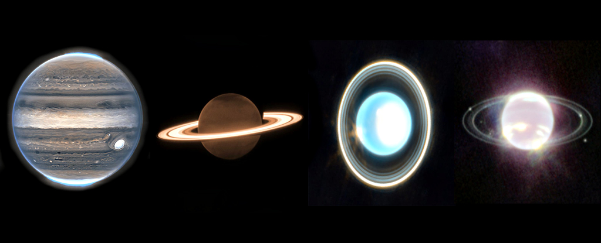

| Department: Math and Physical Sciences Class time and place: MWF, 9:00-9:50 am, Meyer 113 Section: 1 (CRN=20764) Instructor: Dr. Jason Pinkney Office hours in 111 Science Annex at these times: 9am(R), 10am(T), 1pm(T), 3pm(W,R). Email j-pinkney@onu.edu or call 419-772-2740. Instructor's Home page: https://jpastro.net/ Credit hours: 3 Observatory Phone: 772-4028 |
 |
Astronomy has so many subfields that it is impossible to cover them all in one semester. This course deals mainly with the solar system (hence "Planetary Astronomy"). Stars, galaxies and cosmology are covered in PHYS 1061. We begin historically with man's interpretation of the nighttime sky; the "naked eye universe" is that which we can see without a telescope. We then look in detail at the Sun and planets. Two natural categories of planets emerge: the terrestrials and the Jovians. We are now in a golden age of discovery with space missions like the Parker Solar Probe, James Webb Space Telescope, InSight, and Perseverance in the news this year. Finally the comets, asteroids and Kuiper Belt Objects are small but important for understanding the early formation of the solar system. We now have data on over 5000 extrasolar planets (planets around other stars) which challenge our theories of solar system formation and evolution.
Course Objectives:| Week of | Topic | Chapter(s) | Tests | Celestial Events |
| 8/26,28,30 | Syllabus. Survey of Universe. Powers of 10. | 1 | Survey | E0 Welcomefest (8/25) |
| 9/2 | LABOR DAY BREAK | |||
| 9/4,6 | Naked Eye Universe - the Celestial Sphere | 1 | quiz 1 | |
| 9/9,11,13 | Daily, monthly, yearly cycles | 1 | quiz 2 | E1 Saturn Opp. (9/8) |
| 9/16,18,20 | Moon and eclipses | 1,2 | quiz 3 | E2 Nova watch, Neptune Opp. |
| 9/23,25,27 | Copernican Revolution | 2 | Fall Equinox (9/22) | |
| 9/30,10/2,4 | Copernican Rev., Solar system physics | 2 | Exam I | New Moon/eclipse |
| 10/7,9,11 | Light and spectroscopy | 3,4 | quiz 4 | Draconid meteors 10/7 |
| 10/14-15 | FALL BREAK | |||
| 10/16,18 | The Sun | 16 | E3 Comet C/2023 A3 | |
| 10/21,23,25 | Solar System Overview | 6 | quiz 5 | Orionid Meteors (10/21-22) |
| 10/28,30,11/1 | Earth | 7 | ||
| 11/4,6,8 | Moon, Mercury, Venus | 8,9 | Exam II | Taurid Meteors, Jupit. Opp (11/3) |
| 11/11,13,15 | Venus, Mars | 9,10 | E4 Supermoon, Merc | |
| 11/18,20,22 | Jovian planet atmospheres | 11-13 | ||
| 11/25-29 | THANKSGIVING BREAK | |||
| 12/2,4,6 | Jovian planet atmospheres / Moons | 11-13 | quiz 6 | |
| 12/9,11,13 | Jovian Moons and Rings | 11-13 | E5 Geminids | |
| 12/16 (Mon) | Comprehensive FINAL at 9:15-11:15 AM, usual classroom. | _ | Final exam. | Geminid meteors |
| Component | Percent | |
| Observing | Constellation sheets, 2 observing forms, 3+ visits to Observatory | 5% |
| In-class | Homework, in-class worksheets, participation | 20% |
| Quizzes | Quizzes (drop lowest grade) | 25% |
| Exams | There will be two exams and a final. | 50% |
Your final letter grade is assigned roughly as follows:
| < 55 | 55-70 | 70-80 | 80-90 | 90-100 |
| F | D | C | B | A |
| Astronomy Links of all kinds | Pinkney's Homepage | The ONU Physics Homepage |